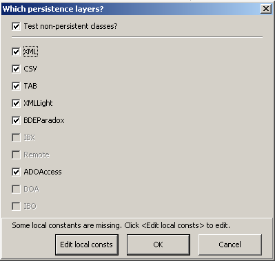
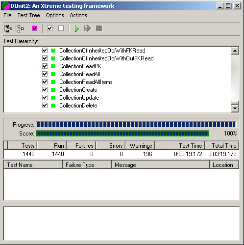

Dunit2 --- tiOPF2 execution results
Changed made to 26th May 07
- Fixed .dfm so D5, D7 can load DFM properly.
- Updated Dunit2 to minimise warning false
positives
- Fixed TestTestRunner to prevent exception trying to
iterate over non existent error reports.
Changes made (slowly) up to 9th June.
- Fixed Dunit2 GetName function to use inheritance when
fetching test names for printing the htm files.
- Fixed Dunit2 so string compare params displayed within
< > pairs contain spaces to prevent illegal html
constructs.
- Updated tiTestTestRunner to generate legal HTML
transitional code.
- DUnit2 compatibility with V9.3 has been improved to
further minimise the changes required to tiOPF.
Added XML Reporting 28th June 2007
Merged changes from Graeme Geldenhuys 1st Sept 2007.



Page last updated 21st Sep
2007